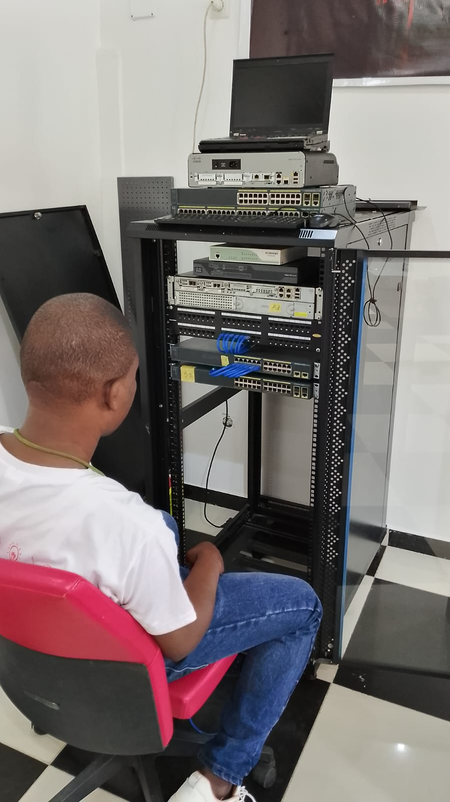
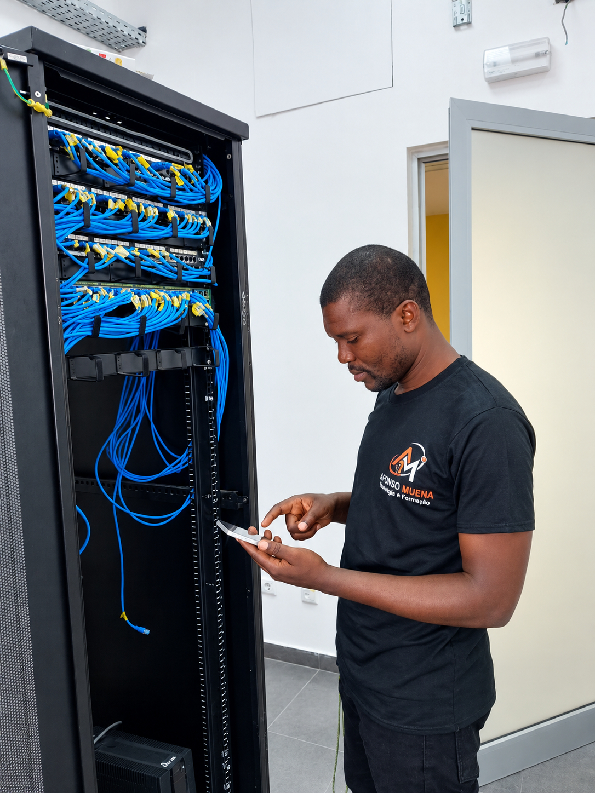
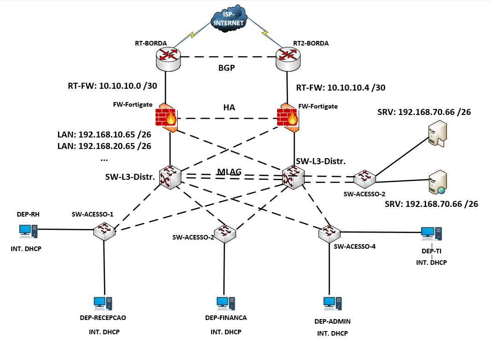
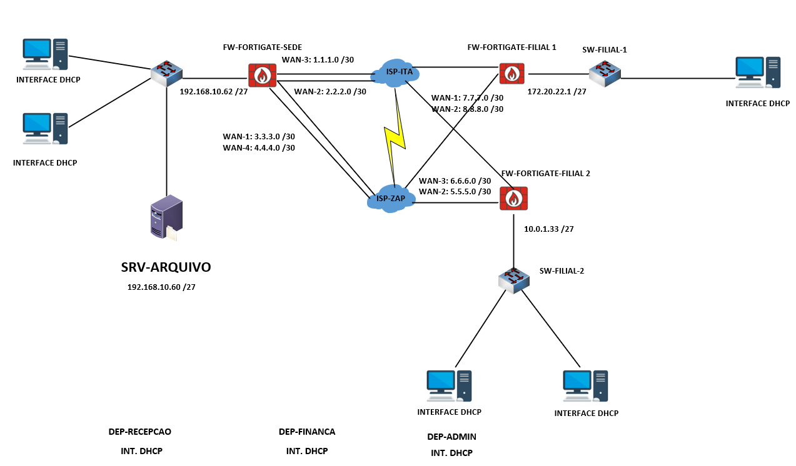
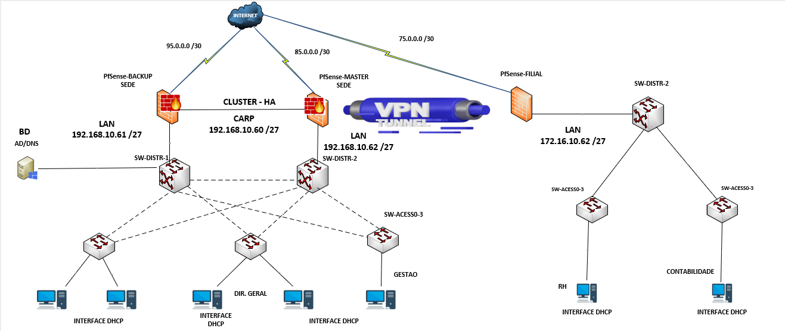

TRANSFORMANDO IDEIAS EM REALIDADE DIGITAL.
Criatividade e inovação andam lado a lado. Com uma combinação única de design inteligente, funcionalidade intuitiva e otimização para resultados, estou pronto para elevar a sua presença online ao próximo nível.

MINHAS ESPECIALIDADES
Infraestrutura & Servidores
Administração avançada de Windows Server corporativo, garantindo o gerenciamento e segurança de utilizadores com Active Directory, DNS, DHCP e GPOs estratégicas.
Redes & Roteamento
Configuração avançada de equipamentos Cisco e MikroTik. Implementação prática de roteamento dinâmico (OSPF), VLANs, QoS, NAT e agregação de links com EtherChannel.
Segurança & Monitoramento
Gestão perimetral e monitoramento de tráfego com firewalls FortiGate (VPNs Site-to-Site e SSL). Análise de desempenho e auditoria proativa via Zabbix e Ntop-NG.

MUITO PRAZER,
SOU AFONSO MUENA.
Fundador da AFONSO MUENA – Tecnologia & Formação, sou especialista na orientação de projetos académicos e técnicos nas áreas de redes, segurança informática, monitoramento e infraestrutura tecnológica.
Ao longo da minha trajetória, participei ativamente na orientação de mais de 20 trabalhos de fim de curso (TFC/PAP), impulsionando o desenvolvimento técnico e profissional de jovens talentos no mercado tecnológico com uma abordagem 100% prática e focada em problemas reais.
Especialidades Técnicas Orientadas:
- 🔹 Redes de Computadores
- 🔹 MikroTik & Cisco
- 🔹 Segurança Informática
- 🔹 Monitoramento de Redes
- 🔹 Admin. de Servidores
- 🔹 Infraestrutura e TI
Abaixo, apresento alguns dos principais projetos práticos orientados por mim.
MEU PORTFÓLIO
Estes são alguns dos meus principais projetos técnicos

Arquitetura BGP com Alta Disponibilidade & M-LAG
Implementação de infraestrutura de rede resiliente utilizando protocolo BGP para redundância de caminhos, associado a M-LAG para agregação de links em ambientes de alta criticidade.

Implementação e Otimização de SD-WAN
Desenho e deploy de solução de rede definida por software (SD-WAN), centralizando o gerenciamento de tráfego, melhorando o desempenho de links e garantindo segurança entre filiais.
Infraestrutura de Data Center & Formação
Desenvolvimento de laboratórios práticos e consultoria corporativa voltada para capacitação de equipes de engenharia em ambientes avançados de TI.

Cluster Firewall pfSense HA & Túnel VPN Sede-Filial
Desenho e implementação de infraestrutura de segurança perimetral com Cluster em Alta Disponibilidade (HA) utilizando pfSense e protocolo CARP, integrado a um Túnel VPN para interconexão segura e redundante de dados entre a Sede e a Filial.
FALA COMIGO
Vamos tirar as suas ideias do papel